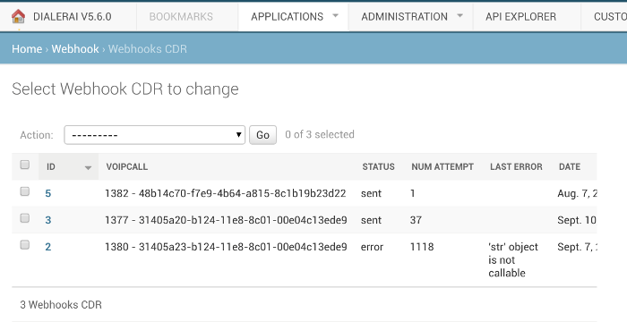

Webhook¶
A webhook can be configured in order to push CDRs to your own platform or API endpoint. When a new CDR is created on our system, a POST request will be sent with the CDR details. This is used when you either need to keep information about the call being made or to activate an application after a dial or an inbound call is made.
The Webhook comes with a UI on the admin, https://HOSTNAME/admin/webhook/webhookcdr/ and it has a retry mechanism, which ensures that CDRs are pushed correctly. If there is an error, for instance your endpoint didn’t accept the API call, it will be displayed on the UI.
{kind=link}
The Webhook endpoint needs to accept the POST method, all the following fields will be sent:
* client_id:
type: "number"
description: "Account code to indicate which customer the dial should be associated with"
* cdr_id:
type: "string"
description: "CDR API id. ie GET /rest-api/cdr/<id>"
* callerid:
type: "string"
description: "Caller id presented used by the dialer"
* callrequest_id:
type: "string"
description: "Dialer root call id"
* call_id:
type: "string"
description: "Dialer FreeSwitch call id"
* campaign_id:
type: "number"
description: "Dialer campaign id"
* campaign_name:
type: "string"
description: "Dialer campaign name"
* leg_type:
type: "number"
description: "Call leg type"
* phone_number:
type: "string"
description: "Phone number of the lead"
* list_phonebook_id:
type: "array"
items: {
type: "number"
}
description: "List id that the lead is in"
* list_phonebook_name:
type: "array"
items: {
type: "string"
}
description: "List name that the lead is in"
* gateway:
type: "string"
description: "Gateway used by the dialer to place the call"
* amd_status:
type: "number"
description: "AMD status returned by dialer"
* hangup_cause_code:
type: "number"
description: "Hangup cause code returned by dialer"
* hangup_cause:
type: "string"
description: "Hangup cause string returned by dialer"
* cost:
type: "number"
description: "Cost of the dial"
* billed_duration:
type: "number"
description: "Billable time"
* incremental_duration:
type: "number"
description: "Incremental duration on the CDR record"
* call_date:
type: "string"
format: "date-time"
description: "Timestamp of when the dial was placed"
Additionally, there is an header ‘x-api-key’ which can be set for authentication.